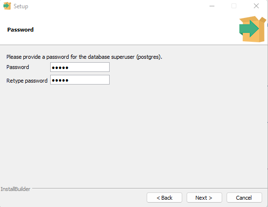
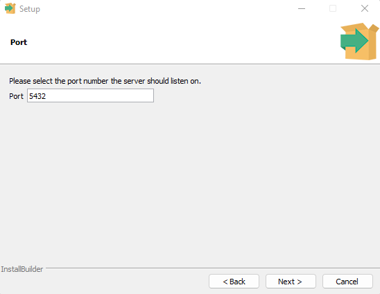
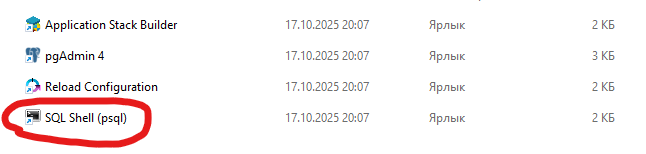

PostgreSQL (Основы)
Установка
Устанивливаем с официального сайта. Делаем все по инструкции программы.
Из важного (важно для доступа):
Вводим и запоминаем пароль; 
Запоминаем номер порта, по которуму будем осуществлять доступ к базе данных; 
Остальное - по умолчанию.
Ура, установили!
Подключение к СУБД
Работать с системой управления базой данных можно при помощи приложений:

psql- нативная консоль;pgAdmin- Open-source приложение по управлениюPostgreSQl;DBeaver- аналогично второму варианту, ссылка;Navicat- тоже визуальный интерфейс для управления СУБД.
psql - консоль
После установки полного пакета (если устанавливаем по умолчанию) PostgreSQL установится также приложение psql.
